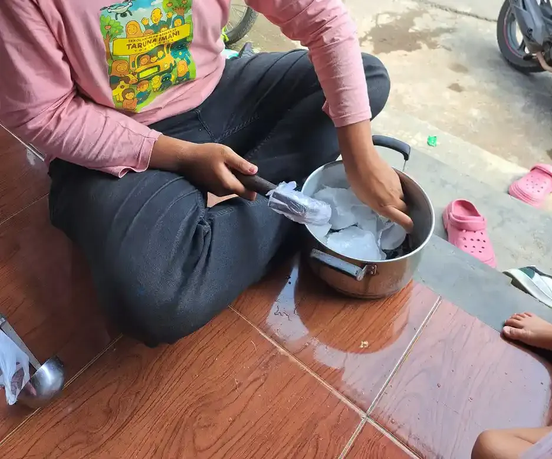
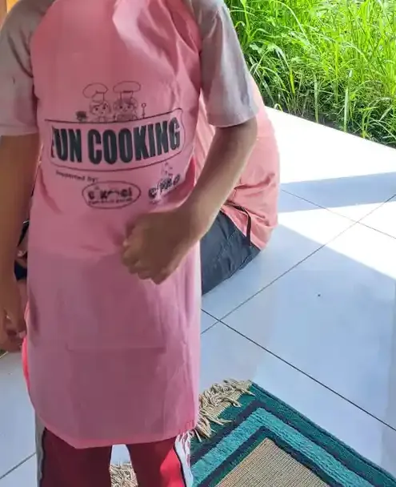
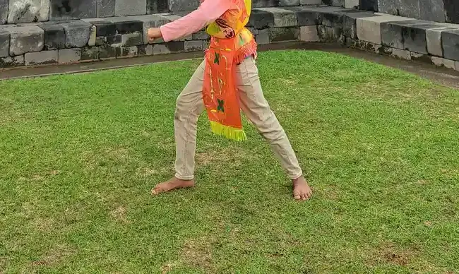
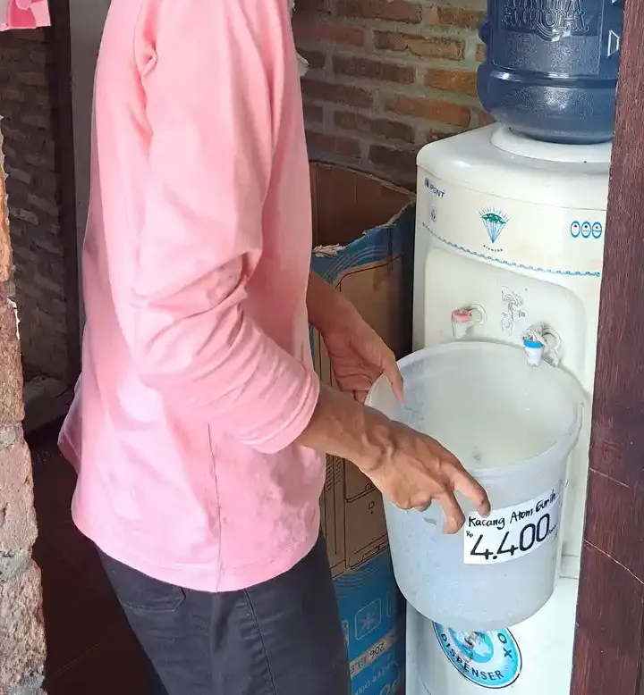

Daftar Isi
- Apa Itu Hipotonia?
- Hipotonia Adalah Gejala, Bukan Diagnosis
- Tanda yang Perlu Disampaikan ke Dokter
- Siapa yang Menegakkan Diagnosis dan Bagaimana Prosesnya
- Tujuan Terapi Fisik untuk Anak Hipotonia
- Apa yang Biasanya Dilakukan Fisioterapis
- Seberapa Kuat Bukti Ilmiahnya?
- Fisioterapi Jarang Berjalan Sendiri
- Peran Orang Tua di Rumah
- Bagaimana Prospeknya? Jawaban Jujur dari Sumber Resmi
- Memilih Fisioterapis untuk Anak
- Kesalahan Umum yang Sebaiknya Dihindari
- Pertanyaan yang Sering Diajukan
Mendengar kata "hipotonia" dari dokter atau terapis sering membuat orang tua cemas. Ada yang langsung mencari latihan di internet, ada yang bertanya-tanya apakah anaknya akan bisa duduk, berdiri, atau berjalan seperti teman sebayanya. Wajar sekali. Yang paling membantu di tahap ini adalah memahami dulu apa itu hipotonia, siapa yang memeriksanya, dan apa sebenarnya peran terapi fisik.
Artikel ini khusus membahas terapi fisik untuk anak dengan hipotonia. Gambaran umum fisioterapi untuk anak berkebutuhan khusus sudah kami tulis di terapi fisik untuk ABK, sedangkan anak yang terlambat berjalan dibahas di terapi fisik untuk anak terlambat jalan. Kalau anak Anda berusia sekitar 2 tahun dan Anda masih menimbang perlu tidaknya ke dokter, bacalah dulu tanda keterlambatan motorik kasar anak 2 tahun.
Satu hal kami tegaskan sejak awal: tulisan ini membantu Anda memahami dan menyiapkan pertanyaan. Penegakan diagnosis dan penyusunan program terapi hanya bisa dilakukan oleh dokter dan fisioterapis berizin yang memeriksa anak secara langsung.
Apa Itu Hipotonia?
MedlinePlus, ensiklopedia kesehatan dari National Library of Medicine Amerika Serikat, mendefinisikan hipotonia sebagai tonus otot yang menurun. Bayi dengan hipotonia tampak lunglai dan terasa seperti "boneka kain" saat digendong. Mereka cenderung berbaring dengan siku dan lutut lurus terkulai, padahal bayi dengan tonus normal biasanya menekuk siku dan lututnya. Kontrol kepala juga bisa lemah, sehingga kepala mudah jatuh ke samping, ke belakang, atau ke depan.
Lalu apa itu tonus otot? StatPearls, buku rujukan klinis yang diterbitkan di NCBI Bookshelf, menjelaskan tonus sebagai sisa ketegangan otot saat beristirahat. Ketegangan kecil inilah yang menjaga postur tubuh. Dokter menilainya dari seberapa besar hambatan yang terasa ketika anggota tubuh anak digerakkan secara pasif. Pada hipotonia, hambatan itu berkurang secara tidak normal.
Teks informasi dari National Institute of Neurological Disorders and Stroke (NINDS), yang dimuat ulang oleh BrainFacts.org, memberi gambaran sederhana: dalam keadaan rileks pun, otot normal punya sedikit kontraksi yang membuatnya terasa kenyal. Pada hipotonia, kekenyalan itu berkurang.
Tonus otot tidak sama dengan kekuatan otot
Ini perbedaan penting yang sering tertukar. ChoosePT, situs informasi publik milik American Physical Therapy Association yang ditulis bersama APTA Academy of Pediatric Physical Therapy, menyebut tonus sebagai "kesiapan untuk bergerak", sedangkan kekuatan adalah tenaga yang dihasilkan otot untuk melawan beban. Anak dengan hipotonia bisa saja mengangkat beban yang sama dengan anak lain; yang berbeda adalah kesiapan ototnya untuk memulai gerakan. NINDS dan StatPearls juga menegaskan bahwa hipotonia bisa muncul dengan atau tanpa kelemahan otot.
| Aspek | Tonus otot | Kekuatan otot |
|---|---|---|
| Pengertian | Sisa ketegangan otot saat istirahat yang menjaga postur (StatPearls) | Tenaga maksimal yang bisa dihasilkan otot (StatPearls) |
| Cara dinilai | Hambatan saat anggota tubuh digerakkan secara pasif oleh pemeriksa | Kemampuan anak melawan beban atau mengangkat tubuhnya sendiri |
| Istilah bila menurun | Hipotonia (tonus rendah) | Kelemahan otot |
| Hubungan keduanya | Bisa muncul tanpa kelemahan | Bisa menyertai hipotonia, bisa juga tidak (NINDS) |
Hipotonia Adalah Gejala, Bukan Diagnosis
Inilah pesan terpenting artikel ini. Menurut StatPearls, angka kejadian hipotonia sulit dipastikan karena hipotonia bukan penyakit, melainkan tanda yang muncul pada berbagai penyakit. Cleveland Clinic bahkan menulis bahwa sangat jarang seorang bayi memiliki hipotonia tanpa kondisi dasar yang menyertainya.
MedlinePlus menjelaskan alurnya: tonus dan gerak otot melibatkan otak, saraf tulang belakang, saraf tepi, dan otot. Hipotonia bisa menjadi tanda adanya masalah di titik mana pun di sepanjang jalur itu. StatPearls membagi penyebabnya secara garis besar menjadi penyebab sentral (berasal dari otak dan saraf pusat) dan penyebab perifer (berasal dari saraf tepi, sambungan saraf dan otot, atau otot itu sendiri). Penyebab sentral ditemukan pada sekitar 60 sampai 80 persen kasus.
| Kelompok | Contoh kondisi yang disebut sumber | Sumber |
|---|---|---|
| Sentral (otak dan saraf pusat) | Kekurangan oksigen sebelum atau sesudah lahir, kelainan pembentukan otak, sindrom genetik atau kromosom seperti sindrom Down dan sindrom Prader-Willi, infeksi, gangguan metabolisme | StatPearls, MedlinePlus |
| Perifer (saraf tepi dan otot) | Atrofi otot spinal (SMA), distrofi otot, miopati bawaan, gangguan sambungan saraf dan otot | StatPearls, MedlinePlus |
| Kondisi lain yang dapat menyertai | Lahir prematur, hipotiroid bawaan, paparan racun, cedera saraf tulang belakang, palsi serebral | Cleveland Clinic, MedlinePlus, NINDS |
| Penyebab tidak ditemukan | NINDS menulis bahwa kadang penyebab hipotonia memang tidak dapat ditemukan | NINDS |
Menurut StatPearls, sindrom Down adalah penyebab genetik tersering dari hipotonia sentral, disusul sindrom Prader-Willi. Kalau Anda ingin memahami salah satu kondisi tersebut, bacalah down syndrome adalah atau cerebral palsy. Namun ingat, daftar di atas hanya contoh. Menebak penyebab dari gejala di rumah tidak mungkin dan tidak perlu; itu tugas dokter.

Tanda yang Perlu Disampaikan ke Dokter
Berikut tanda-tanda yang dicantumkan sumber resmi. Satu tanda tidak berarti anak pasti mengalami hipotonia. Gunanya adalah membantu Anda menjelaskan pengamatan kepada dokter.
Pada bayi
- Tampak lunglai seperti boneka kain, lengan dan tungkai terkulai di sisi tubuh (MedlinePlus, NINDS, Cleveland Clinic).
- Kontrol kepala lemah, kepala mudah jatuh ke depan, ke belakang, atau ke samping (MedlinePlus, ChoosePT).
- Terasa "melorot" saat diangkat dari ketiak. MedlinePlus menulis bahwa bayi dengan tonus normal bisa diangkat dengan tangan di bawah ketiaknya, sedangkan bayi hipotonia cenderung tergelincir di antara tangan.
- Sulit mengisap atau menelan saat menyusu, dan tangis yang lemah (ChoosePT, Cleveland Clinic).
- Gerakan spontan lebih sedikit, lebih banyak tidur dibanding bayi seusianya, atau refleks yang menurun (ChoosePT).
Pada anak yang lebih besar
- Keterlambatan tonggak gerak seperti duduk, merangkak, dan berjalan. Cleveland Clinic juga menyebut keterlambatan mengucapkan kata pertama dan makan sendiri.
- Masalah postur dan mobilitas, sendi dan ligamen yang terlalu lentur, serta kesulitan bernapas atau berbicara (NINDS).
- Telapak kaki tampak datar saat duduk, berdiri, atau mendorong tubuh ke ujung jari (ChoosePT).
Di Indonesia, Ikatan Dokter Anak Indonesia (IDAI) memasukkan "hiper/hipotonia atau gangguan tonus otot" ke dalam daftar tanda bahaya perkembangan motor kasar, bersama gerakan yang tidak seimbang antara sisi kiri dan kanan serta gerakan yang tidak terkontrol. IDAI menganjurkan orang tua yang menemukan salah satu tanda bahaya untuk tidak menunda dan segera memeriksakan anak ke tenaga kesehatan terdekat. Langkah pemantauan lewat Buku KIA dan Posyandu dirangkum di langkah-langkah deteksi dini tumbuh kembang anak, dan tonggak gerak tahun pertama ada di milestone motorik kasar anak 0-12 bulan.
Siapa yang Menegakkan Diagnosis dan Bagaimana Prosesnya
Diagnosis hipotonia dan penyebabnya ditegakkan oleh dokter, bukan oleh orang tua, guru, atau terapis. MedlinePlus menjelaskan bahwa dokter akan melakukan pemeriksaan fisik, termasuk pemeriksaan rinci sistem saraf dan fungsi otot. Pada kebanyakan kasus, dokter spesialis saraf ikut membantu menilai, dan ahli genetika dapat membantu mendiagnosis kondisi tertentu.
StatPearls menguraikan bahwa evaluasi dimulai dari riwayat yang rinci: riwayat keluarga, kehamilan, persalinan, dan perkembangan anak. Dokter lalu memeriksa tonus dengan beberapa manuver, misalnya mengangkat bayi tegak dengan memegang ketiaknya (suspensi vertikal). Menurut StatPearls, pada sekitar separuh kasus penyebab hipotonia sudah dapat ditentukan dari riwayat dan pemeriksaan fisik yang teliti.
Bila perlu, dokter memilih pemeriksaan penunjang sesuai dugaan penyebab. Cleveland Clinic dan NINDS menyebut contoh seperti MRI atau CT scan otak, tes genetik, dan elektromiografi (EMG) untuk menilai fungsi saraf dan otot. ChoosePT mengingatkan bahwa hipotonia sendiri tidak terlihat di gambar MRI; pemeriksaan pencitraan dipakai untuk mencari kondisi penyebabnya. Laporan klinis American Academy of Pediatrics tentang keterlambatan motorik (Noritz dan Murphy, Pediatrics 2013) menyebut pemeriksaan kadar enzim kreatin kinase dalam darah untuk anak dengan tonus otot rendah. Semua keputusan pemeriksaan ini ada di tangan dokter.
Pesan penting dari laporan AAP yang sama: pemeriksaan penyebab sebaiknya dilakukan bersamaan dengan rujukan ke program intervensi dini. Artinya, anak tidak harus menunggu semua hasil pemeriksaan untuk mulai mendapat dukungan gerak. Konsep ini kami jelaskan lebih lanjut di intervensi dini. Untuk keluarga di DIY, daftar layanan resmi dan alur rujukannya ada di klinik tumbuh kembang anak Yogyakarta.
Tujuan Terapi Fisik untuk Anak Hipotonia
Setelah penyebab diperiksa, NINDS menjelaskan bahwa kondisi dasarnya ditangani lebih dulu, lalu diikuti terapi suportif untuk hipotonianya. Di sinilah fisioterapi berperan. Menurut NINDS, terapi fisik dapat memperbaiki kontrol gerak dan kekuatan tubuh secara keseluruhan.
ChoosePT merinci bahwa fisioterapis akan bekerja bersama keluarga untuk:
- Membantu anak tumbuh dan berkembang seoptimal mungkin.
- Menambah kekuatan tubuh anak secara keseluruhan. ChoosePT menyebut sebagian besar penanganan diarahkan untuk menambah kekuatan sebagai kompensasi tonus yang rendah.
- Membatasi komplikasi lebih lanjut. StatPearls menambahkan bahwa terapi fisik, okupasi, dan wicara berperan penting dalam memaksimalkan fungsi otot dan mencegah kelainan bentuk sekunder.
- Memberi arahan kapan perlu melibatkan profesional lain, seperti terapis okupasi, terapis wicara, atau dokter saraf.
Perhatikan bahwa tujuan-tujuan ini berbicara tentang fungsi dan perkembangan, bukan "menormalkan" tonus. Itu sebabnya fisioterapis biasanya menetapkan target yang konkret dan bermakna bagi kehidupan sehari-hari anak, misalnya duduk stabil saat makan atau berpindah posisi sendiri saat bermain, dan target itu disepakati bersama keluarga.

Apa yang Biasanya Dilakukan Fisioterapis
1. Evaluasi menyeluruh
Menurut ChoosePT, kunjungan pertama berisi evaluasi lengkap. Fisioterapis mengumpulkan informasi tentang riwayat kesehatan dan kelahiran anak, lalu melakukan pemeriksaan fisik. Pada bayi, pemeriksaan bisa mencakup suspensi vertikal, suspensi horizontal (bayi ditopang di dada dan perutnya), dan uji tarik ke posisi duduk untuk melihat apakah bayi menahan kepalanya. Hasil evaluasi menjadi dasar program yang disesuaikan dengan kebutuhan, tantangan, dan tujuan anak.
2. Edukasi keluarga tentang posisi dan aktivitas
ChoosePT menyebut edukasi pasien dan keluarga sebagai bagian program. Fisioterapis memberi panduan posisi dan aktivitas yang paling mendukung perkembangan anak, dan rekomendasinya spesifik untuk kebutuhan anak tersebut. Untuk bayi, ChoosePT juga menganjurkan orang tua memantau posisi tubuh bayi untuk mengurangi risiko komplikasi seperti leher miring (tortikolis) atau kepala peyang.
3. Terapi langsung dan pelatihan orang tua
Fisioterapis dapat mengajari orang tua cara menggerakkan, menopang, dan memosisikan anak, serta mencontohkan aktivitas untuk dilakukan di rumah lengkap dengan cara melakukannya. Bagian ini penting karena anak menghabiskan jauh lebih banyak waktu bersama keluarga daripada di ruang terapi.
4. Latihan penguatan yang disusun khusus
ChoosePT menyebut fisioterapis dapat meresepkan rangkaian latihan khusus untuk membangun kekuatan otot anak dan menjaganya tetap aktif. Kata kuncinya adalah diresepkan: jenis, posisi, dan takarannya ditentukan terapis setelah memeriksa anak. Karena itu artikel ini sengaja tidak memuat program latihan berdosis. Contoh pendekatan bermain yang bisa didiskusikan dengan terapis ada di latihan fisioterapi anak di rumah dan permainan motorik kasar.

Seberapa Kuat Bukti Ilmiahnya?
Orang tua berhak tahu bukan hanya apa yang dilakukan, tetapi juga seberapa kuat dasarnya. Tinjauan payung terbaru oleh Paleg dan rekan (jurnal Disabilities, 2025) merangkum delapan tinjauan sistematis dan dua tinjauan ringkas tentang intervensi terapi fisik dan okupasi untuk anak di bawah 6 tahun dengan hipotonia sentral perkembangan, kelompok yang mencakup antara lain sindrom Down, sindrom Prader-Willi, dan palsi serebral dengan hipotonia sebagai tipe gerak utama.
| Pendekatan | Yang ditemukan tinjauan | Kekuatan bukti |
|---|---|---|
| Latihan berjalan di treadmill | Mendukung awal kemampuan berjalan pada anak dengan sindrom Down (dinilai oleh empat tinjauan sistematis dan satu tinjauan ringkas) | Rendah (GRADE) |
| Latihan motorik dan sensorimotor | Hasil positif | Rendah atau sangat rendah; rekomendasi bersyarat |
| Ortosis (alat bantu penopang, misalnya untuk kaki) | Hasil positif | Rendah atau sangat rendah; rekomendasi bersyarat |
| Pengaturan posisi dan alat bantu mobilitas | Hasil positif | Rendah atau sangat rendah; rekomendasi bersyarat |
| Pijat bayi | Hasil positif | Rendah atau sangat rendah; rekomendasi bersyarat |
Para penulis mencatat bahwa sebagian besar bukti berasal dari anak dengan sindrom Down, dan hanya sedikit penelitian tentang hipotonia sentral dari penyebab lain. Mereka menyimpulkan bahwa penelitian primer tentang efektivitas intervensi dini masih sangat dibutuhkan. Bagi orang tua, artinya sederhana: pendekatan-pendekatan ini masuk akal dan didukung bukti awal yang positif, tetapi tidak ada satu metode yang terbukti kuat untuk semua anak. Pemilihan pendekatan perlu disesuaikan dengan penyebab dan kondisi anak oleh terapis yang menanganinya, dan wajar bila Anda bertanya kepada terapis mengapa sebuah pendekatan dipilih.
Fisioterapi Jarang Berjalan Sendiri
NINDS dan Cleveland Clinic menggambarkan penanganan hipotonia sebagai kerja tim. Selain terapi fisik, terapi okupasi membantu anak dalam aktivitas sehari-hari, terapi wicara membantu kesulitan bernapas, bicara, dan menelan, dan pada bayi serta anak kecil bisa ditambah program stimulasi sensorik. StatPearls menambahkan bahwa pendekatan tim antarprofesi memberi hasil yang lebih baik, dan dukungan gizi juga sangat penting karena banyak di antara anak ini memiliki berat badan kurang.
Kalau Anda ingin mengenal anggota tim yang lain, bacalah terapi okupasi, terapi wicara, dan gambaran umum di macam-macam terapi pada anak. Untuk anak dengan palsi serebral, ada juga pembahasan terapi okupasi untuk anak cerebral palsy.
Peran Orang Tua di Rumah
StatPearls menekankan bahwa orang tua perlu dilibatkan secara aktif sejak awal dalam menyesuaikan pilihan penanganan, dan pentingnya kontrol rutin. Beberapa hal yang bisa Anda lakukan, tanpa menggantikan peran terapis:
- Ikuti program dari terapis, bukan dari video acak. ChoosePT menganjurkan orang tua memasukkan aktivitas penguatan yang diajarkan fisioterapis ke dalam rutinitas harian anak. Kalau ragu cara melakukannya, minta terapis mencontohkan ulang.
- Hati-hati saat mengangkat dan menggendong. MedlinePlus mengingatkan agar ekstra hati-hati saat mengangkat dan menggendong anak dengan hipotonia untuk mencegah cedera. Tanyakan kepada terapis cara menggendong yang tepat untuk anak Anda.
- Perhatikan posisi bayi. Untuk bayi, ikuti saran terapis soal variasi posisi agar risiko tortikolis dan kepala peyang berkurang (ChoosePT).
- Catat dan rekam. Catatan perubahan kemampuan dan video pendek gerak anak di rumah membantu dokter dan terapis menilai kemajuan.
- Jaga anak tetap aktif sesuai arahan. ChoosePT menyebut aktivitas fisik yang teratur penting untuk menjaga kesehatan dan fungsi anak sampai remaja dan dewasa.
Di Sekolah Inklusi Taruna Imani, kami melihat bahwa kegiatan sehari-hari seperti membawa barang, duduk di lantai saat makan bersama, atau menari di acara sekolah memberi banyak kesempatan bergerak yang menyenangkan. Kegiatan semacam ini melengkapi, bukan menggantikan, program dari terapis. InsyaAllah, dengan kesabaran dan kerja sama antara keluarga, sekolah, dan tenaga kesehatan, setiap langkah kecil anak layak dihargai.

Bagaimana Prospeknya? Jawaban Jujur dari Sumber Resmi
Pertanyaan ini wajar, tetapi jawabannya tidak bisa diseragamkan. Sumber resmi pun memberi nada yang berbeda. NINDS menulis bahwa hipotonia dapat menjadi kondisi seumur hidup, tetapi pada sebagian kasus tonus otot membaik seiring waktu. Cleveland Clinic menyebut prognosis bervariasi menurut diagnosis dasarnya, dan bila penyebabnya kondisi genetik tertentu, gejala hipotonia bisa saja memburuk. ChoosePT menulis bahwa tonus otot tidak membaik seiring bayi tumbuh, dengan pengecualian bayi prematur yang dapat berkembang ke tonus yang lebih khas, sehingga anak perlu beradaptasi sepanjang hidup.
Benang merahnya sama: perjalanan hipotonia sangat ditentukan oleh penyebabnya. Itulah mengapa diagnosis dari dokter begitu penting, dan mengapa tidak ada pihak yang boleh menjanjikan hasil terapi tertentu. Gambaran yang paling tepat untuk anak Anda datang dari dokter dan terapis yang memeriksanya. NINDS dan Cleveland Clinic sama-sama menegaskan bahwa hipotonia itu sendiri tidak memengaruhi kecerdasan.
Memilih Fisioterapis untuk Anak
ChoosePT menyarankan beberapa pertimbangan saat memilih fisioterapis: pengalaman menangani hipotonia atau kondisi penyebabnya, kekhususan di bidang fisioterapi anak, dan praktik yang berfokus pada bayi dan anak. Jangan ragu menanyakan pengalaman terapis menangani anak dengan kondisi serupa, dan siapkan penjelasan serinci mungkin tentang keseharian anak.
Di Indonesia, jalur yang lazim dimulai dari Posyandu atau Puskesmas, lalu ke dokter spesialis anak, yang dapat merujuk ke dokter rehabilitasi medik dan fisioterapis. Pastikan anak ditangani oleh fisioterapis berizin yang bekerja berdasarkan hasil pemeriksaan dokter, dan bawa semua hasil pemeriksaan serta catatan Anda ke setiap kunjungan.
- Apa tujuan terapi untuk anak saya dalam beberapa bulan ke depan?
- Aktivitas apa yang aman dilakukan di rumah, dan apa yang sebaiknya dihindari?
- Bagaimana cara menggendong dan memosisikan anak saya dengan benar?
- Apakah anak saya perlu dinilai juga oleh terapis okupasi atau terapis wicara?
- Tanda apa yang membuat saya perlu segera menghubungi dokter?
Kesalahan Umum yang Sebaiknya Dihindari
- Menganggap hipotonia sebagai diagnosis akhir. Hipotonia adalah gejala. Pencarian penyebab oleh dokter tetap penting karena menentukan penanganan dan prognosis.
- Menunggu diagnosis lengkap sebelum mulai dukungan. AAP menganjurkan pemeriksaan penyebab dan rujukan intervensi dini berjalan bersamaan.
- Menyamakan tonus dengan kekuatan. Anak dengan tonus rendah tidak selalu lemah, dan sebaliknya. Biarkan terapis yang menilai.
- Mengikuti program latihan dari internet. Latihan yang tidak sesuai dengan kondisi sendi dan penyebab hipotonia bisa berisiko. Mintalah program tertulis dari terapis yang memeriksa anak.
- Percaya pada janji kesembuhan cepat. Bukti ilmiah untuk berbagai pendekatan masih berkualitas rendah sampai sangat rendah, dan hasil sangat bergantung pada penyebab. Waspadai pihak yang menjanjikan hasil pasti.
Pertanyaan yang Sering Diajukan
Apakah hipotonia sama dengan otot lemah?
Tidak sama. Tonus otot adalah sisa ketegangan otot saat beristirahat, sedangkan kekuatan adalah tenaga maksimal yang bisa dihasilkan otot. NINDS dan StatPearls menjelaskan bahwa hipotonia bisa muncul dengan atau tanpa kelemahan otot. Karena itu dokter memeriksa keduanya secara terpisah.
Apakah hipotonia sebuah penyakit?
Bukan. Hipotonia adalah gejala atau temuan pemeriksaan yang bisa disebabkan banyak kondisi, mulai dari gangguan di otak, saraf tulang belakang, saraf tepi, sampai otot. Cleveland Clinic menulis bahwa sangat jarang bayi memiliki hipotonia tanpa kondisi dasar yang menyertainya. Penyebabnya hanya bisa ditentukan dokter.
Siapa yang menegakkan diagnosis hipotonia dan penyebabnya?
Dokter. Pemeriksaan biasanya dimulai dari dokter anak, lalu sering melibatkan dokter saraf anak dan, bila perlu, ahli genetika. Pemeriksaan penunjang seperti MRI, tes genetik, atau EMG dipilih dokter sesuai dugaan penyebab. Fisioterapis menilai kemampuan gerak anak, tetapi tidak menggantikan diagnosis dokter.
Kapan anak dengan hipotonia sebaiknya mulai fisioterapi?
Waktunya ditentukan bersama dokter yang memeriksa anak. Laporan klinis American Academy of Pediatrics (Noritz dan Murphy, 2013) menekankan bahwa pemeriksaan penyebab sebaiknya berjalan bersamaan dengan rujukan ke program intervensi dini, jadi anak tidak perlu menunggu diagnosis lengkap untuk mulai mendapat dukungan.
Apa yang dilakukan fisioterapis pada anak hipotonia?
Menurut panduan ChoosePT dari American Physical Therapy Association, fisioterapis melakukan evaluasi lengkap, lalu menyusun program yang bisa berisi edukasi keluarga tentang posisi dan aktivitas yang mendukung perkembangan, terapi langsung termasuk mengajari orang tua cara menggendong dan memosisikan anak, serta latihan penguatan otot yang dipilih khusus untuk anak tersebut.
Apakah fisioterapi bisa menyembuhkan hipotonia?
Tidak ada janji kesembuhan. Fisioterapi bertujuan membantu fungsi gerak, kekuatan, dan kemandirian anak serta mencegah komplikasi, sedangkan perjalanan tonus otot sangat bergantung pada penyebabnya. Sumber resmi pun berbeda nada soal prognosis, jadi gambaran yang paling tepat untuk anak Anda datang dari dokter yang menanganinya.
Bolehkah saya melatih anak hipotonia sendiri di rumah dengan video dari internet?
Sebaiknya tidak tanpa arahan. Latihan rumahan paling aman bila disusun dan dicontohkan langsung oleh fisioterapis yang sudah memeriksa anak, karena kebutuhan tiap anak berbeda menurut penyebab, usia, dan kondisi sendinya. MedlinePlus juga mengingatkan agar ekstra hati-hati saat mengangkat dan menggendong anak dengan hipotonia untuk mencegah cedera.
Apakah hipotonia memengaruhi kecerdasan anak?
Hipotonia itu sendiri tidak memengaruhi kecerdasan, menurut NINDS dan Cleveland Clinic. Namun beberapa kondisi penyebab hipotonia bisa disertai keterlambatan perkembangan lain, sehingga dokter dan tim terapi biasanya juga memantau bicara, kognitif, dan kemampuan sosial anak.
Bacaan Terkait
Sumber dan Referensi
- MedlinePlus (U.S. National Library of Medicine), Hypotonia
- National Institute of Neurological Disorders and Stroke, Hypotonia (teks NINDS dimuat ulang BrainFacts.org)
- Cleveland Clinic, Hypotonia in Babies
- Madhok SS, Shabbir N. Hypotonia. StatPearls, NCBI Bookshelf (PMID 32965880)
- American Physical Therapy Association (ChoosePT), Physical Therapy Guide to Hypotonia (Low Muscle Tone), disusun bersama APTA Academy of Pediatric Physical Therapy
- Paleg GS, Hidalgo Robles A, Govender P, Livingstone RW (2025), Occupational and Physical Therapy Interventions for Young Children with Developmental Central Hypotonia: An Overview of Systematic Reviews, Disabilities 5(1)
- Noritz GH, Murphy NA (2013), Motor delays: early identification and evaluation, Pediatrics (PMID 23713113)
- Ikatan Dokter Anak Indonesia, Mengenal Keterlambatan Perkembangan Umum pada Anak
Catatan: Artikel ini bersifat edukasi umum dan bukan pengganti konsultasi dengan psikolog, tenaga kesehatan, atau petugas layanan sosial resmi. Seluruh sumber dibaca dari teks aslinya pada 12 Oktober 2026 (StatPearls lewat arsip Wayback Machine karena NCBI menolak akses otomatis; teks NINDS lewat BrainFacts.org karena halaman ninds.nih.gov kini dialihkan; tinjauan Paleg dan laporan Noritz dari abstrak resminya). Artikel ini bukan alat diagnosis dan tidak memuat program latihan berdosis.
Tentang artikel ini
- Ditulis oleh: Tim YUKA (Yayasan Ukhuwah Kaffah Amanatullah), pengelola Sekolah Inklusi Taruna Imani, Sleman, Yogyakarta.
- Dasar rujukan: medlineplus.gov (National Library of Medicine), teks informasi NINDS, clevelandclinic.org, StatPearls (NCBI Bookshelf), choosept.com (American Physical Therapy Association), idai.or.id, serta publikasi ilmiah yang ditautkan langsung di bagian sumber di bawah artikel ini.
- Terbit: 12 Oktober 2026. Pembaruan terakhir: 12 Oktober 2026.
- Status tinjauan medis: artikel ini disusun oleh tim pendidik, belum ditinjau oleh tenaga kesehatan berizin. Tinjauan oleh tenaga kesehatan berkredensial sedang kami siapkan dan status ini akan diperbarui di halaman ini begitu selesai. Alur tinjauan dan koreksi dijelaskan di Kebijakan Editorial YUKA. Untuk diagnosis dan program terapi, rujuklah pada dokter anak, dokter rehabilitasi medik, atau fisioterapis berizin yang memeriksa anak.
- Kebijakan koreksi: jika Anda menemukan klaim yang keliru atau sumber yang tidak cocok, beri tahu kami lewat halaman kontak. Kami memperbaiki isinya dan mencantumkan catatan koreksi secara terbuka.